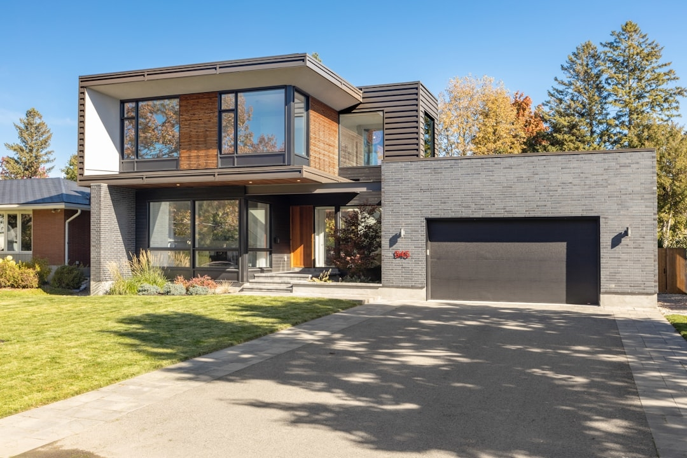

Toby Beavers approaches Charlottesville home sales through pricing analysis, property positioning, marketing, and negotiation. For luxury estates, Charlottesville historic homes, Charlottesville farms, and other distinctive properties, marketing may include professional photography and detailed property narratives designed to communicate architecture, history, acreage, setting, amenities, and location.
His experience covers Charlottesville farms, Charlottesville historic homes, Charlottesville country club real estate, Charlottesville VA new construction, luxury condos, townhomes, gated communities, waterfront homes, homes with private pools, and Albemarle County homes for sale.
That experience is particularly useful because Charlottesville is not one standardized residential market. A luxury estate in Keswick, a historic North Downtown home, a Crozet residence, an Ivy property, a Forest Lakes home, and a Downtown Charlottesville condo each need to be considered within their own setting.

Buyers looking for the best Charlottesville real estate agent may also want assistance determining whether a property's asking price is reasonable. Pricing can differ substantially even between homes located relatively close to one another. Condition, acreage, renovations, views, location, neighborhood demand, and architectural characteristics can change how buyers perceive value.
Toby Beavers provides buyers and sellers with a neighborhood-first approach supported by property evaluation, pricing knowledge, negotiation, and experience with Charlottesville luxury real estate. Clients can use this knowledge to compare properties more carefully, develop informed buying strategies, and position homes appropriately when selling.
This approach is valuable for anyone researching the best Charlottesville real estate agent because local knowledge influences many parts of a transaction. Understanding recent comparable sales is important, but buyers also need context about location, land, property condition, architectural quality, privacy, surrounding development, and community amenities.
Toby Beavers helps buyers review these factors alongside comparable sales and current Charlottesville real estate conditions. When a suitable property is identified, he assists with developing an offer based on the specific transaction rather than applying the same strategy to every purchase.
When comparing candidates for the best Charlottesville real estate agent, clients may therefore want to consider not only sales activity but also the depth of an agent's knowledge about the property category and neighborhood involved.
For buyers, this knowledge supports a more informed property search. Toby Beavers works with clients to identify neighborhoods and homes that align with their objectives. Once potential properties are identified, he helps evaluate asking prices, property characteristics, comparable sales, and current Charlottesville real estate conditions.
best Crozet VA realtorA central part of his approach is neighborhood knowledge. Charlottesville real estate is influenced heavily by location. North Downtown provides historic architecture and proximity to the Downtown Mall. Crozet combines mountain surroundings, residential development, recreation, and Western Albemarle schools. Keswick is recognized for estates, acreage, equestrian properties, and luxury country living. Ivy offers established western Albemarle County properties, while Forest Lakes and Belvedere provide different community environments and residential options.
Because these properties vary considerably, choosing the best Charlottesville real estate agent should involve finding someone familiar with the specific type of home and location involved. Toby Beavers works across multiple sections of the market and approaches each transaction according to its individual characteristics.
Toby Beavers helps clients understand these differences. His neighborhood knowledge includes Crozet, Ivy, Keswick, Farmington, Keswick Estates, Belvedere, Forest Lakes, Ashcroft, and North Downtown, among other locations. Rather than treating Charlottesville homes as interchangeable properties within one market, he considers the characteristics that affect individual communities.
For anyone researching the best Charlottesville real estate agent, Toby Beavers offers an established combination of Charlottesville market experience, Albemarle County knowledge, luxury property expertise, renovation experience, and familiarity with many of the area's most recognized neighborhoods and residential property types.
This becomes particularly important in competitive situations. An offer needs to balance the buyer's interest in securing the property with appropriate financial discipline. Price is one component, but contingencies, inspection considerations, timing, and other terms may also influence the strength of an offer.
Toby Beavers' experience since 2003, neighborhood-focused knowledge, renovation background, and work across Charlottesville luxury homes and Albemarle County real estate provide a strong foundation for buyers and sellers researching the best Charlottesville real estate agent.
More than two decades in the Charlottesville real estate market has given Toby Beavers extensive exposure to changing property values, neighborhood development, buyer preferences, construction, renovations, and negotiation. This local experience is especially relevant in an area where property characteristics and values can change considerably from one neighborhood to another.
An estate with extensive acreage, for example, may derive significant value from its land, privacy, views, improvements, and location. A historic Charlottesville home may be valued partly for architectural character and renovation quality. A country club property may appeal because of its community, setting, and recreational opportunities.
Knowing where a property is located is only the beginning. Toby Beavers considers factors such as lot characteristics, surrounding development, architectural design, construction quality, renovations, privacy, accessibility, community amenities, and potential resale considerations. This creates a more complete view of a property than relying solely on listing information.
Negotiation can involve more than price. Inspection terms, contingencies, timing, and other contractual elements may influence both parties. Toby Beavers approaches these decisions with attention to protecting the client's interests while maintaining a practical path toward completing the transaction.
For people evaluating the best Charlottesville real estate agent, more than two decades of local experience can be meaningful. Toby Beavers has worked in Charlottesville since 2003 and has observed changes in neighborhoods, development patterns, buyer preferences, property values, and different sections of the Albemarle County real estate market.
Charlottesville offers an unusually diverse selection of residential properties. Buyers may be considering Charlottesville luxury homes, historic residences, downtown condos, townhomes, country club homes, farms, investment properties, new construction, gated communities, waterfront properties, or homes near UVA. Albemarle County adds private estates, acreage, equestrian properties, established neighborhoods, and rural residential opportunities.